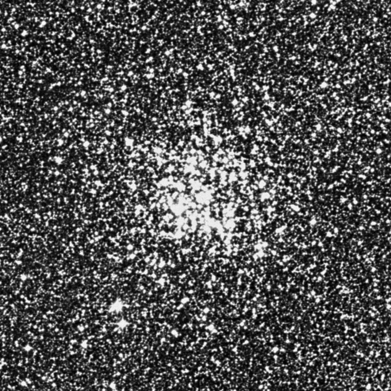
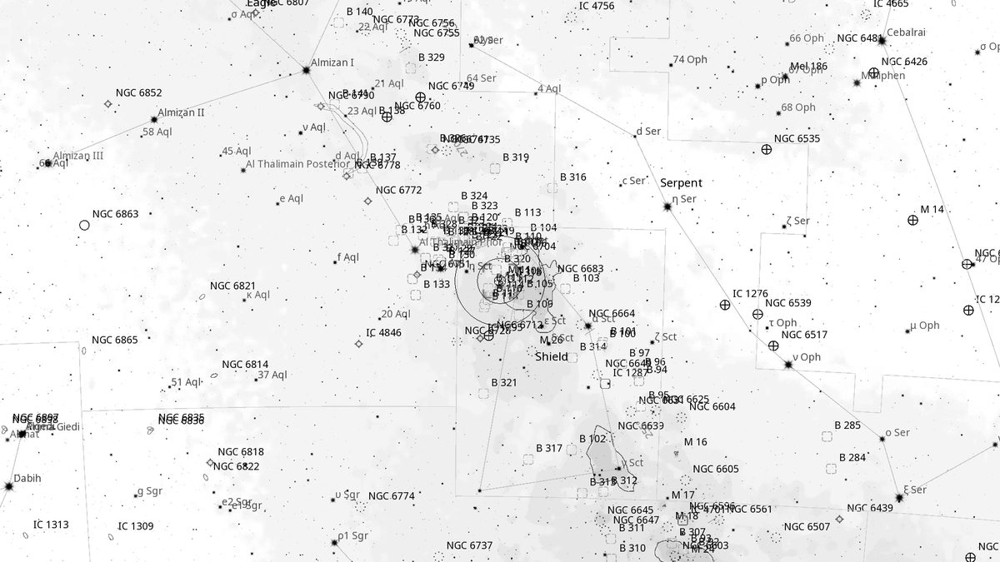
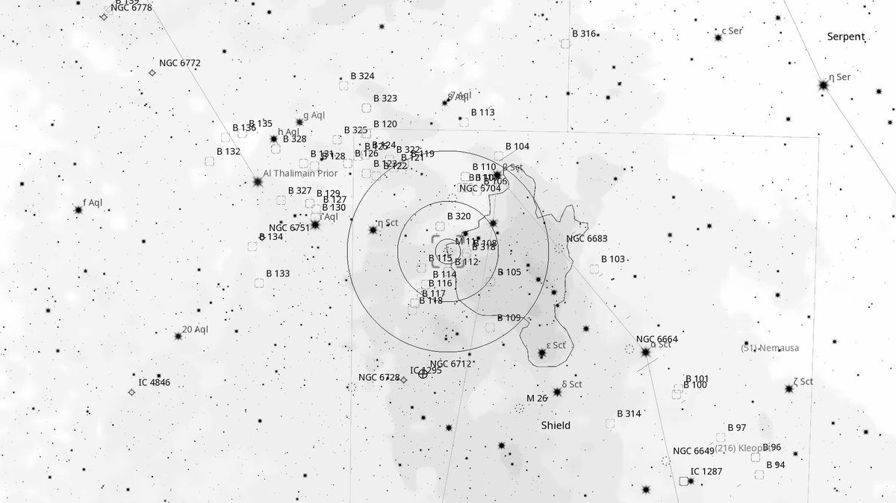
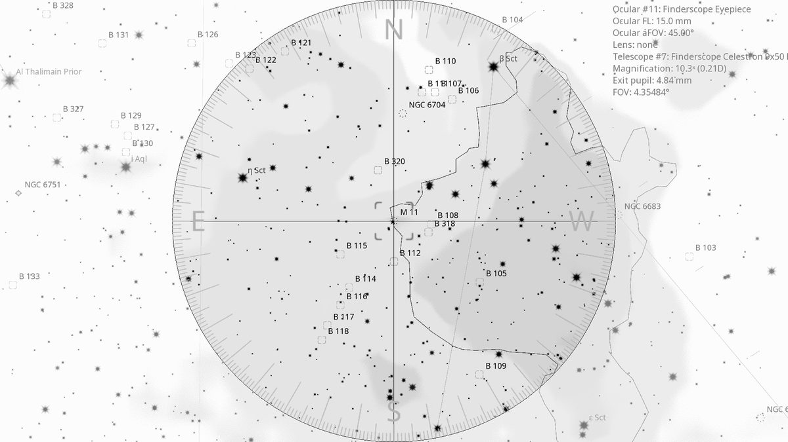
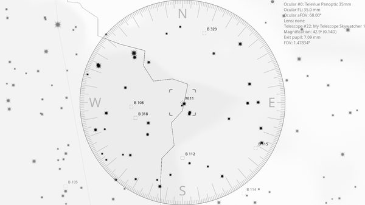

M 11 (OC)
Open Cluster in Scutum
| R.A. | Dec. | Size | Mag | SB | Cnt.St | Type | Distance | Chart |
|---|---|---|---|---|---|---|---|---|
| 18h 51m 05.6s | -06° 16′ 16.7″ | 14.0′ | 5.8 | 11.3 | I2r | OC | -- | -- |

Source: POSS-2 UK Schmidt Red (STScI) | Field: 15′ × 15′
Background
M11 is the Wild Duck Cluster — a rich, dense open cluster 6,200 light-years away in Scutum. Around 250 million years old with 2,900 members. The distinctive V-shape of brighter stars gave it the “flying ducks” name.
My Observing Notes
25-cm (Meade 10-inch LX200, The Coffee Grinder): Find from Aquila: line from Altair through δ and ζ Aql to Scutum, then follow the chain β–12–η Scuti. M11 sits at the end as a hazy patch in the finder. A beautiful, bright cluster — its core is a dense mass of stars like a very loose globular. The subtle V-shape namesake takes some imagination; “Flying Ducks” might be more appropriate.(Saturday, June 2025)
References
Charts

Ultra-wide view (~25° field)

Wide-field view with Telrad rings (4°, 2°, 0.5°)

Finderscope view (9×50 RACI, ~4.4° TFOV)

Eyepiece view — 35 mm Panoptic on 12-inch f/5 (1.6° TFOV)